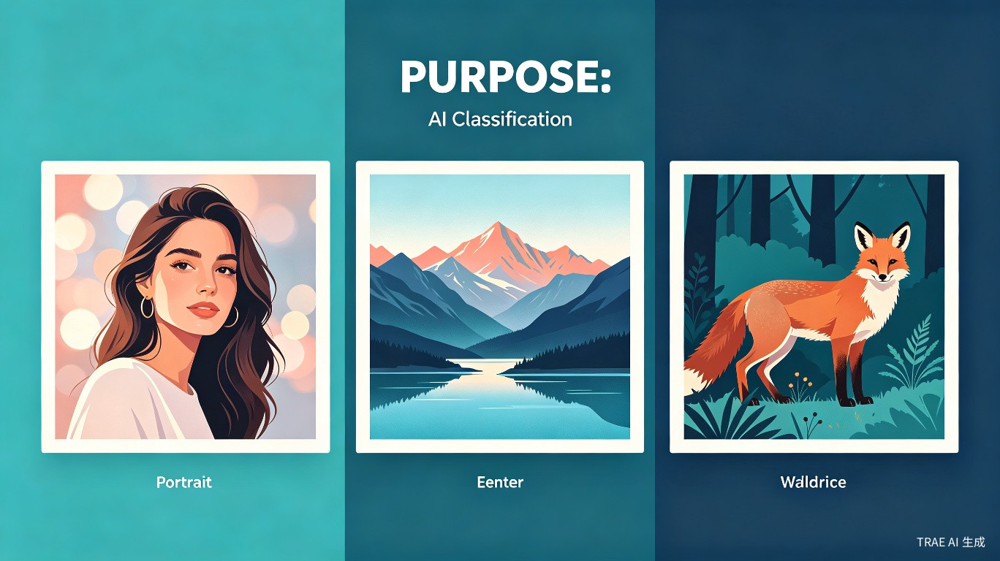
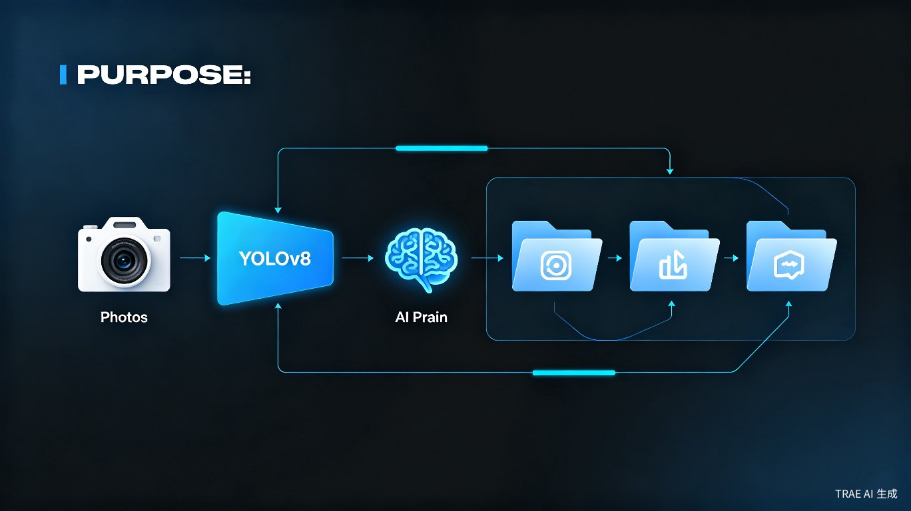

问题背景
对于摄影爱好者、旅行博主和专业摄影师来说，一次外拍或旅行回来，相机和手机里往往堆积着数百甚至上千张照片。手动筛选、分类、整理这些照片是一项极其耗时且枯燥的工作。
时间成本高
从上千张照片中筛选出满意的作品，往往需要花费数小时甚至数天
筛选过程枯燥
重复性的翻看、判断、归类操作容易让人疲惫，降低创作热情
分类标准混乱
不同场景、主题的照片混在一起，后期修图和查找时效率低下
存储管理困难
未经分类的照片库难以维护，备份和归档也变得复杂
解决方案
核心思路
基于 YOLOv8 强大的目标检测能力，构建一套自动化照片分类系统。系统能够智能识别照片中的人像、风景和动物主体，自动将照片归入对应类别，大幅节省人工整理时间。
YOLOv8 是 Ultralytics 推出的最新一代目标检测模型，相比前代在速度和精度上都有显著提升。利用其预训练模型和迁移学习能力，我们可以快速构建一个针对照片分类场景的专用模型。
三大分类体系
系统目前支持三大核心分类，覆盖绝大多数摄影场景：

人像
自动检测照片中的人脸和人物主体，适用于写真、街拍、活动记录等场景
风景
识别自然风光、城市建筑、天空海洋等场景，适合旅行和风光摄影
动物
检测各类动物主体，包括野生动物、宠物、鸟类等生态摄影题材
分类体系可根据实际需求灵活扩展，例如增加「美食」「建筑」「夜景」等更多类别。
系统架构
整个系统采用模块化设计，从照片输入到分类输出形成完整闭环：

工作流程
- 照片输入 — 支持批量导入文件夹或单张照片
- 预处理 — 调整尺寸、格式转换、质量优化
- YOLOv8 检测 — 模型推理，识别照片中的人像/风景/动物特征
- 智能分类 — 根据检测结果自动归入对应文件夹
- 结果展示 — 可视化分类结果，支持人工复核和调整
技术栈
YOLOv8
核心检测模型Python
主要开发语言PyTorch
深度学习框架OpenCV
图像处理NumPy / Pandas
数据处理Flask / FastAPI
Web 服务接口核心功能特性
- ✓ 批量智能分类 — 一次性处理成百上千张照片，自动归入对应类别文件夹
- ✓ 高精度识别 — 基于 YOLOv8 的先进检测算法，准确识别人像、风景、动物主体
- ✓ 本地运行 — 无需上传云端，保护隐私，支持离线使用
- ✓ 可扩展分类 — 模块化设计，方便添加新的分类类别
- ✓ 可视化界面 — 直观的图形界面，查看分类结果和置信度
- ✓ 人工复核 — 支持对分类结果进行人工检查和修正
应用场景拓展
除了基础的照片分类，该系统在多个领域都有实用价值：
📸 摄影后期工作流
外拍回来后快速筛选照片，按类别整理后分别进行针对性修图，提升后期效率
🗄️ 照片库归档管理
对历史照片进行批量整理，建立清晰的分类档案，方便日后检索和回顾
✈️ 旅行相册整理
旅行归来后自动将照片按人像、风景、动物归类，快速生成主题相册
📱 手机照片清理
帮助整理手机中积累的大量照片，识别重复或相似照片，释放存储空间
🎓 教学素材管理
教师或培训机构可快速整理教学图片素材，按主题分类归档
🏢 企业资产管理
企业宣传图片、产品照片的自动化分类管理，提升数字资产管理效率
性能预期
基于 YOLOv8 的优异性能，系统在常见硬件配置上可达到以下效率水平：
开发路线图
基础分类模型搭建
完成 YOLOv8 环境配置，训练人像/风景/动物三大分类模型，实现基础分类功能
桌面端应用开发
开发跨平台桌面客户端，支持批量导入、可视化展示、结果导出等功能
分类体系扩展
增加美食、建筑、夜景、车辆等更多分类类别，提升模型泛化能力
智能化增强
引入重复照片检测、相似照片聚类、自动打标签等高级功能
项目展望
这个基于 YOLOv8 的照片分类系统，旨在用 AI 技术解决摄影爱好者日常面临的真实痛点。通过自动化的智能分类，让创作者从繁琐的整理工作中解放出来，把更多时间和精力投入到真正的创作中。
未来，随着模型的持续优化和分类体系的扩展，系统有望成为摄影师、设计师、内容创作者不可或缺的效率工具。AI 不应该取代人的创造力，而应该成为创造力的加速器。
感谢阅读
这是一个正在开发中的创意项目，期待在 TRAE AI 创造力大赛中与更多志同道合的创作者交流学习